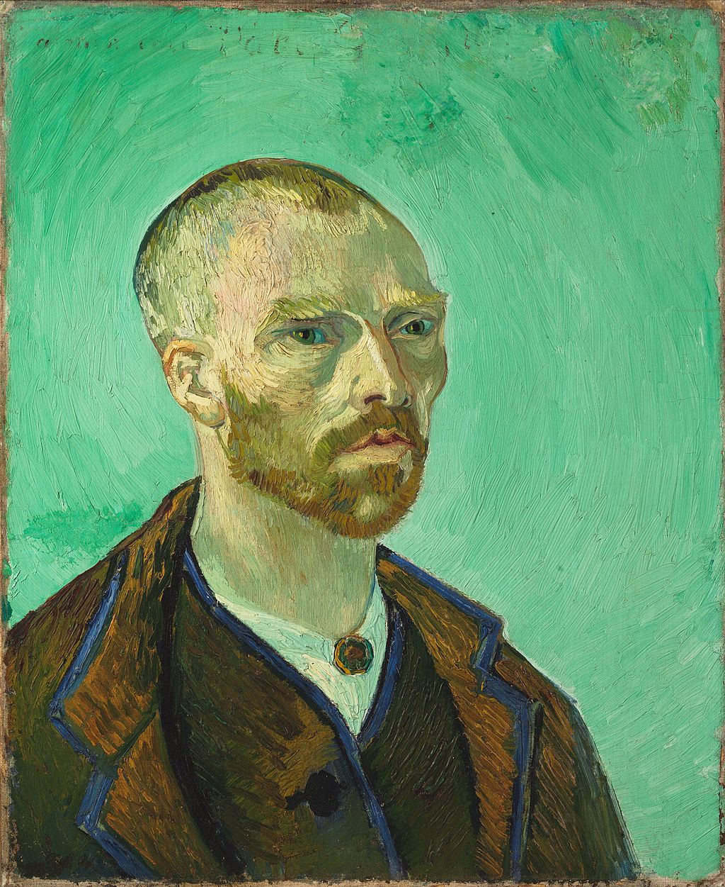

<head>
<meta charset="UTF-8" />
<meta name="keywords" content="drawing, painting" />
<meta name="description" content="drawings by Sunjy" />
<title>Sunjy</title>
<link rel="shortcut icon" type="image/x-icon" href="../../mImages/mCommon/favicon.ico" media="screen" />
<link rel="stylesheet" type="text/css" href="../../mCsses/mCommon/mCssA.css" />
<link rel="stylesheet" type="text/css" href="../../mCsses/mCommon/mCssB.css" />
<link rel="stylesheet" type="text/css" href="../../mCsses/mCommon/mCssC.css" />
<link rel="stylesheet" type="text/css" href="../../mCsses/mCommon/mCssD.css" />
<link rel="stylesheet" type="text/css" href="../../mCsses/mContent/mCssA.css" />
<link rel="stylesheet" type="text/css" href="../../mCsses/mContent/mCssB.css" />
<link rel="stylesheet" type="text/css" href="../../mCsses/mContent/mCssC.css" />
<link rel="stylesheet" type="text/css" href="../../mCsses/mContent/mCssD.css" />
</head>
<script type="text/javascript" src="../../mScripts/mContent/mContentAA.js" /></script>
<script type="text/javascript" src="../../mScripts/mContent/mContentAB.js" /></script>
<script type="text/javascript" src="../../mScripts/mContent/mContentAC.js" /></script>
<script type="text/javascript" src="../../mScripts/mContent/mContentAD.js" /></script>
<script type="text/javascript"></script> 
<script type="text/javascript">
document.write('<div class="mImgAbsolute"></div>');
/*
document.write('<p class="mFontSizeBColor" />From a white paper...</p>');
document.write('<table class="center"><tr><td>');
document.write('');
document.write('</td></tr></table>');
*/
</script>


<script type="text/javascript">
document.write('<p class="mFontSizeBColor" />Self Portrait, dedicated to Paul Gauguin</p>');
document.write('<p class="mFontSizeSColor" />“Self Portrait, dedicated to Paul Gauguin” by Vincent van Gogh is a self-portrait depicting his face as it appeared in the mirror. His right side in the image is, in reality, the left side of his face.<br><br> Van Gogh’s painted dozens of self-portraits. They were an essential part of his work as a painter.<br><br>Vincent van Gogh wanted to reinvent painting through the genre of portraiture, he encouraged other artists to paint themselves, and then to exchange the canvases.<br><br>Van Gogh received self-portraits from Emile Bernard, and Gauguin and Van Gogh sent this portrait to Gauguin with the inscription “To my friend Paul Gauguin.”<br><br>He described the process of creating his painting in several letters to his brother Theo, an art dealer in Paris. Van Gogh explaining how he modeled his features influenced by Japanese prints.<br><br>He added color effect with the contours of his jacket and painted the background in a “pale Veronese green” without shadows.<br><br>Van Gogh suffered from psychotic episodes and delusions; he often neglected his physical health, did not eat properly, and drank heavily.<br><br>His friendship with Gauguin ended after a confrontation with a razor when in a rage, he severed part of his left ear. Soon after, Gauguin sold this painting.<br><br>Van Gogh spent time in psychiatric hospitals, however, his depression continued, and on 27 July 1890, Van Gogh shot himself in the chest with a revolver. He died at 37 years of age from his injuries two days later.<br><br>Vincent Willem van Gogh is among the most famous and influential figures in the history of Western art. Van Gogh was unsuccessful during his lifetime and was considered a madman and a failure.<br><br>He created about 2,100 artworks, including around 860 oil paintings, most of them in the last two years of his life. They were characterized by bold colors and dramatic, impulsive, and expressive brushwork that contributed to the foundations of modern art.<br><br>Vincent van Gogh and Japanese Art<br><br>Vincent van Gogh began his deep interest in Japanese prints when he discovered magazine illustrations of artwork. He was fascinated by woodblock prints using Japanese techniques that depicted Japanese life.<br><br>In 1885, van Gogh started collecting ukiyo-e prints that could be bought in small Parisian shops.<br><br>Van Gogh shared these prints with his contemporaries and organized a Japanese print exhibition in Paris in 1887. One version of Van Gogh’s Portrait of Pere Tanguy (1887) featured a backdrop of Japanese prints.<br><br>Japanese woodblock prints inspired him, and in his works, he reflected the vibrancy of color and light that he observed in Japanese woodblock prints.<br></p>');
document.write('<table class="center" /><tr><td>');
document.write('<br> Van Gogh’s painted dozens of self-portraits. They were an essential part of his work as a painter.<br><br>Vincent van Gogh wanted to reinvent painting through the genre of portraiture, he encouraged other artists to paint themselves, and then to exchange the canvases.<br><br>Van Gogh received self-portraits from Emile Bernard, and Gauguin and Van Gogh sent this portrait to Gauguin with the inscription “To my friend Paul Gauguin.”<br><br>He described the process of creating his painting in several letters to his brother Theo, an art dealer in Paris. Van Gogh explaining how he modeled his features influenced by Japanese prints.<br><br>He added color effect with the contours of his jacket and painted the background in a “pale Veronese green” without shadows.<br><br>Van Gogh suffered from psychotic episodes and delusions; he often neglected his physical health, did not eat properly, and drank heavily.<br><br>His friendship with Gauguin ended after a confrontation with a razor when in a rage, he severed part of his left ear. Soon after, Gauguin sold this painting.<br><br>Van Gogh spent time in psychiatric hospitals, however, his depression continued, and on 27 July 1890, Van Gogh shot himself in the chest with a revolver. He died at 37 years of age from his injuries two days later.<br><br>Vincent Willem van Gogh is among the most famous and influential figures in the history of Western art. Van Gogh was unsuccessful during his lifetime and was considered a madman and a failure.<br><br>He created about 2,100 artworks, including around 860 oil paintings, most of them in the last two years of his life. They were characterized by bold colors and dramatic, impulsive, and expressive brushwork that contributed to the foundations of modern art.<br><br>Vincent van Gogh and Japanese Art<br><br>Vincent van Gogh began his deep interest in Japanese prints when he discovered magazine illustrations of artwork. He was fascinated by woodblock prints using Japanese techniques that depicted Japanese life.<br><br>In 1885, van Gogh started collecting ukiyo-e prints that could be bought in small Parisian shops.<br><br>Van Gogh shared these prints with his contemporaries and organized a Japanese print exhibition in Paris in 1887. One version of Van Gogh’s Portrait of Pere Tanguy (1887) featured a backdrop of Japanese prints.<br><br>Japanese woodblock prints inspired him, and in his works, he reflected the vibrancy of color and light that he observed in Japanese woodblock prints.<br>" />');
document.write('</td></tr></table>');
</script>


